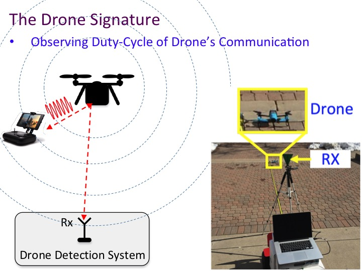

|
Drone Detection and
Localization
We have published award-winning
research on drone detection. Our work,
Matthan, received an ACM SIGMOBILE Research
Highlights Award.
- ACM SIGMOBILE Research Highlights Award:
Phuc Nguyen, Hoang Truong, Mahesh
Ravindranathan, Anh Nguyen, Richard Han, Tam Vu,
"Matthan:
Drone Presence Detection by Identifying
Physical Signatures in the Drone’s RF
Communication", ACM
International Conference on Mobile Systems,
Applications, and Services (MobiSys) 2017,
pp. 211-224.
Drones are flying
in dangerous airspaces, so we need an early warning
system to detect their presence that is cheap and
effective. We propose to use WiFi access points
suitably augmented to detect the RF emissions of
drones.

We published an early version of drone detection at
DroNet 2016:
- Phuc Nguyen, Mahesh Ravindranathan, Anh
Nguyen, Richard Han, Tam Vu, "Investigating
Cost-effective RF-based Detection of Drones",
2nd Workshop on Micro Aerial Vehicle Networks,
Systems, and Applications for Civilian Use (DroNet
2016), pp. 17-22, ISBN: 978-1-4503-4405-0, doi>10.1145/2935620.2935632.
Once a drone is detected, it
is important to know where the drone is
located. We have published initial work on drone
localization at DroNet 2019. Our
work not only localizes the drone, but also its
controller, which is important in certain
applications:
- Phuc Nguyen, Taeho Kim, Jinpeng Miao, Daniel
Hesselius, Erin Kenneally, Daniel Massey, Eric
Frew, Richard Han and Tam Vu, "Towards
RF-based Localization of a Drone and Its
Controller", 5th ACM Workshop on Micro
Aerial Vehicle Networks, Systems and
Applications (DroNet) 2019, pp. 21-26,
DOI: 10.1145/3325421.3329766.
Airborne Sensor Networks
We also published early work on airborne sensor
networks using fixed-wing MAVs (Micro Air Vehicles):
- J. Allred, A. B. Hasan, S. Panichsakul, B.
Pisano, P. Gray, J. Huang, R. Han, D. Lawrence,
K. Mohseni, "SensorFlock:
An Airborne Wireless Sensor Network of
Micro-Air Vehicles", ACM SenSys 2007,
pp. 117-129.
|